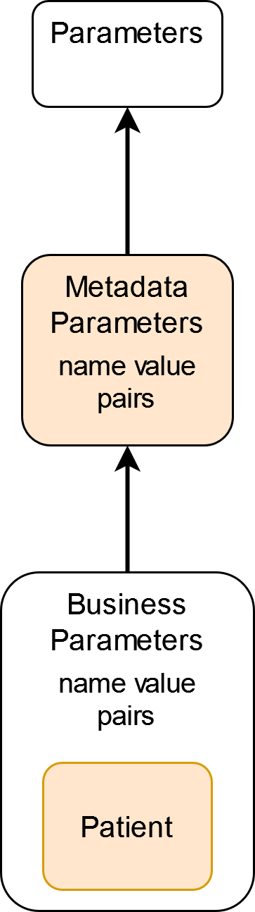

0.1.0 - ci-build
0.1.0 - ci-build
BCHCIM - Local Development build (v0.1.0). See the Directory of published versions
Note
This specification is currently published as a Draft Standard on the ministry github and is not intended for implementation. Feedback is welcome but readers should understand that there is more work to be done in testing the profiles and operations defined in this guide. For more information, please see the Future Plans page in this guide.
Not sure if this is true, will users be able to use FHIR and V3 in some sort of combination? I.e. Get Demo in FHIR than V# for Revise Patient?
RESTful interfaces will not be implemented for FHIR
All interactions will primarily use the Patient resource. The Patient resource is ideal to represent clients as Patients has almost all of the necessary attributes and will require only a few extensions. Patients also are recommended for enterprise master patient indices by the HL7 group and is in a Normative state, i.e. stable and ready for implementation. See FHIR standards evolution for a description of Normative.
There are several extensions that are applied to the Patient resource. The list below is an overview, more details on the extensions can be found be following the links on the Patient snapshot page.
| Extension Name | Description |
|---|---|
| bc-death-date-extension | A dateTime extension that indicates is the client’s death has been verified by … |
| bc-patient-business-dates | A Period extension at the Patient level that represents the entire record |
| bc-address-validation-status | A code that represents the address validation status. This will be part of every Patient.address |
| bc-gender-business-dates | A Period extension for effective dates |
| bc-birth-date-business-dates | A Period extension for effective dates |
| bc-death-date-business-dates | A Period extension for effective dates |
| bc-death-date-flag-business-dates | A Period extension for effective dates |
| bc-phn-business-dates | A Period extension for effective dates |
Describe all the value sets being used and where we are using something different, I need help in this section
| Attribute | Value Sets |
|---|---|
| Patient.name.use | Not sure how FHIR maps to Client Registry, is Legal the only code used? |
| Patient.telecom.use | home, work, mobile are used and temp, old not allowed |
| Patient.telecom.system | phone or email are allowed, not the others |
| Patient.gender | male, female, unknown and other not allowed but Not sure |
| Patient.address.type | postal and physical are used. both not allowed |
| Patient.address.use | I think this is inferred to be always home |
| Patient.identifier.system | Not sure |
| Patient.identifier.type | Not sure |
| Patient.identifier.use | Not sure |
Client Registry will use the FHIR Operations pattern to exchange information. These are the Operations that Client Registry FHIR will support:
| Operations |
|---|
| https://…./$FindCandidates |
| https://…./$GetDemographics |
| https://…./$GetDemographics.History |
| https://…./$RevisePatient |
| https://…./$RevisePatient.Newborn |
| https://…./$RevisePatient.Async |
| https://…./$MergePatient |
| https://…./$MergePatient.Async |
Suffixes such as History and Async inform the Client Registry FHIR server to perform the operation in a particular way such as returning historical attributes or responding asynchronously.
The body of the request message will vary depending on the business context however all message bodies will consist of at least one Parameter resource which in turn includes two Parameter resources. The first Parameter.Parameter will hold operation information such as unique identifiers for the message, creation time, sender, receiver, enterer, etc The second Parameter.Parameter resource will contain all the business information such as search parameters, resources like Patient, etc.
The image below shows the nested Parameters. The Operation Parameters are for message meta data like timestamps and unique identifiers. The Business Parameters are for search parameters or resources such as Patient.

Response resources are wrapped in Bundles that contain Patients and a OperationOutcome. A search operation like Get Demographics or Find Candidates will be a searchset Bundle that echoes back the search parameters by including a Parameters resource in the Bundle.
This guide touches on some of the business and conformance rules regarding use of the Client Registry. However this guide is not the source of conformance or business rules and the audience is referred to British Columbia’s Health Information Exchange web site for details on the Client Registry system and access to Client Registry.
As stated above each Parameter resource will contain two additional Parameter resources: one for message operational attributes and the second for business elements. Below are the allowed IN and OUT parameters for the operational Parameter resources. These should be common to all messages.
| Parameter Name | Parameter Value | Comments |
|---|---|---|
| message id | parameter.value[string] | Message (unique) id |
| create time | parameter.value[dateTime] | Creation date of message |
| request message id | parameter.value[string] | Message (unique) id |
There are two searches available for Client Registry FHIR, Find Candidates and Get Demographics. The operations are:
| Search Operations |
|---|
| https://…./$FindCandidates |
| https://…./$GetDemographics |
| https://…./$GetDemographics.History |
Find Candidates may return 0 or more candidates, while Get Demographics is designed to return a single match. These searches are expected to provide the required information to confirm a person’s identify.
Revise and Merge Patient are maintain transactions that are closely related and therefore are described in the same section. They use the same FHIR structure and resources; merge uses additional parameters.
| Revise and Merge Operations |
|---|
| https://…./$RevisePatient |
| https://…./$RevisePatient.Async |
| https://…./$RevisePatient.Newborn |
| https://…./$MergePatient |
| https://…./$MergePatient.Async |
These business transactions will allow the user to:
Get Eligibility will not be supported by the Client Registry FHIR interactions. If a FHIR-only user needs to know the claim eligibility status of a Patient they need to retrieve the Patient (the PHN) with a FHIR Get Demographics message and then use the PHN to submit a Get Eligibility message to the eligibility service.
Is there more information we can provide here, like a link to some documentation on the eligibility service?